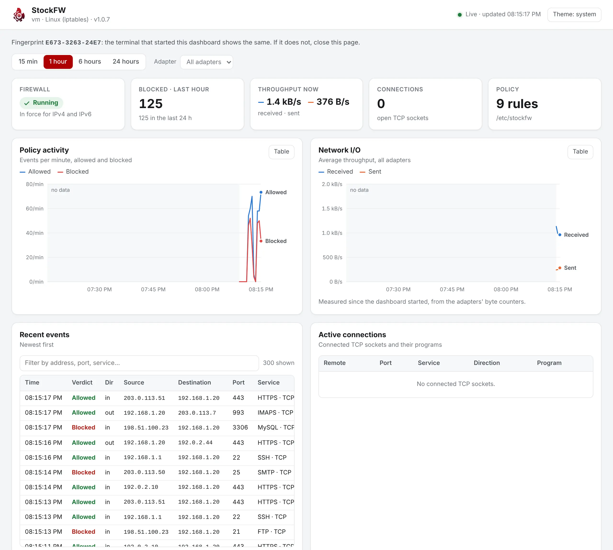
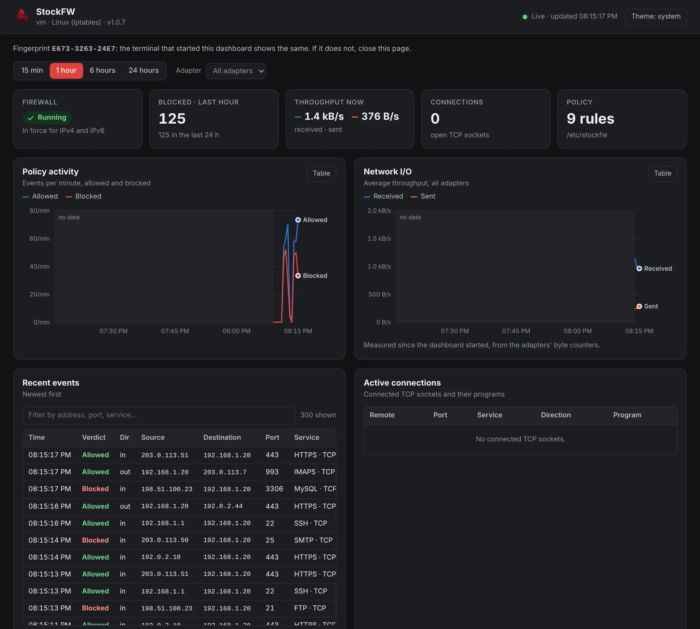

Dashboard
A single web page, served by the stockfw binary itself, that shows the firewall’s state, the two Activity graphs, live events, connections, the policy and the what-if simulator in a browser. It is a window onto the firewall, not a way to change it. Linux

Start it#
$ stockfw dashboard
StockFW dashboard http://127.0.0.1:43977/#code=312fe461dddc3119a4c28c0ae4e40b59
Listening 127.0.0.1:43977 only, read-only
Link one use, for 2 minutes; `stockfw dashboard link' makes a new one
Fingerprint EA07-05C5-61E0 (the page shows the same)
Events The kernel log cannot be read without root privileges. Start StockFW as root to see incoming and outbound traffic.
run `sudo /usr/local/bin/stockfw dashboard' for live events
Open the link above in your browser.
Ctrl-C stops the dashboard.
$ sudo stockfw dashboard
StockFW dashboard http://127.0.0.1:43981/
Listening 127.0.0.1:43981 only, read-only
Link file /run/user/1000/stockfw-dashboard-5V1UX3/open.html
open it in your browser: one use, for 2 minutes
Fingerprint 587A-CB3E-C247 (the page shows the same)
Serves uid 1000 only (SUDO_UID)
Events Live, with history from the kernel logWithout --port the system picks a free port. Run it as yourself, or with sudo from your own account for live events; as plain root it refuses to start and says why, because a browser does not run as root. Under sudo the browser is not started as root, so you open the link yourself, and the dashboard serves the account that ran sudo. --no-open never starts a browser. Ctrl-C stops it, and so does closing the terminal; nothing is left behind.
The link works once#
The link holds a code that works once, for two minutes. It travels in the URL fragment, which browsers never send to a server. The page swaps it for a session, a key it keeps in session storage and sends with every API call; reads keep working for 12 hours, so a monitoring tab lasts the day. The link is printed only when the output is a terminal. Piped, or with --json, you get the path of a launch file instead, a private file (0600) in your runtime directory that sends the browser on to the link, so the code never ends up in a log or in an argument list. A browser that is started gets that file, as before. The launch file is deleted once its code is used, or after two minutes.
$ stockfw dashboard | cat
StockFW dashboard http://127.0.0.1:43978/
Listening 127.0.0.1:43978 only, read-only
Link file /run/user/1000/stockfw-dashboard-YREAY3/open.html
open it in your browser: one use, for 2 minutes
Fingerprint 65C1-2C66-305A (the page shows the same)
$ stockfw dashboard --json --no-open
{"url":"http://127.0.0.1:43979/","port":43979,"link_file":"/run/user/1000/stockfw-dashboard-8BC5X3/open.html","fingerprint":"43D6-26AA-4862","monitoring":false}
$ stockfw dashboard link
http://127.0.0.1:43980/#code=796e07cec3c56f510f01df6dd4fa788b
One use, for 2 minutes. Fingerprint B150-4979-89E1.When the link has expired, a tab was closed, or you want a second tab, stockfw dashboard link asks the running dashboard for a fresh link, over a socket only your account can use; with more than one dashboard running it needs --port N. A link used twice gets a “link used” page, ends every session, and the terminal says so: a second use means someone else saw the link. The fingerprint is shown in the terminal and at the top of the page, so you can check that the page you are looking at came from your dashboard and not from another local server. Use the address as printed, http://127.0.0.1:port; localhost is not accepted. Verified test-dashboard.sh
What is on the page#
- Tiles: firewall state (and whether IPv6 is in force), blocked and allowed counts for the chosen range, throughput now.
- Range picker, 15 minutes to 24 hours, and Policy activity and Network I/O graphs drawn by the same code as the Activity page, with the same no-data band, crosshair and keyboard navigation.
- Recent events, newest first, with a filter box, and Active connections with their programs. The dashboard hides its own sockets: they exist only because someone is looking.
- What-if simulator: the same grammar and verdicts as the app and the command line. Nothing is written.
- Policy: the saved rules, grouped by kind, with their Covers.
- Threat intel: whether enforcement is on, each enabled feed with its last update, and how many ranges the kernel holds.
- The fingerprint of this run, at the top, to compare with the terminal; and a theme button: system, light or dark.

Backfill and monitoring without root#
The app’s Activity graphs start when the app starts. The dashboard can read the kernel log for the events StockFW’s rules logged before it was started, so its history begins before the browser was opened, and the no-data band is shorter or absent. The log stays the archive; the dashboard only reads it. Started as your own user, the dashboard follows a kernel log file your account can read, such as /var/log/kern.log for a user in the adm group, so live events do not always need sudo; when nothing is readable the terminal says so and prints the sudo command to run.
Why it is safe to run#
A page that shows your firewall is a page an attacker would like to read, or to use as a lever. The dashboard is designed so that neither works, and a test exercises each point: the project’s dashboard suite makes the requests as the served account, as root and as another user, and checks what each gets. Verified test-dashboard.sh Verified test-cli.sh
- Loopback only, and only your account
- It binds
127.0.0.1; there is no option to listen anywhere else, and asking for--bindprints why. Before a byte is read, the dashboard asks the kernel who owns the connecting socket: it must come from127.0.0.1exactly and belong to the account being served, never to root or to any other account. Anything else is closed at once, unread, even with a valid link. To use it from another machine, forward the port over SSH. - A one-use link and a session
- The code is 128 bits from the kernel’s random source, good for one use within two minutes; the session key is 256 bits, lives in the process’s memory only, and is sent in an
X-StockFW-Sessionheader compared in constant time. There are no cookies. At most four sessions are open at once, reads work for 12 hours, and a restart ends them all. A code used twice ends every session. - Host check
- Exactly one
Hostheader, equal to127.0.0.1:port, else the request is refused before any path is looked at.localhostis refused on purpose: the server binds IPv4 only, another account could listen on[::1]at the same port, and a browser sent tolocalhostmay go there first. A hostile name re-pointed at 127.0.0.1, the DNS-rebinding trick, fails the same check. - The page’s own requests only
- The one
POST, which swaps the code for a session, must carry the page’s ownOrigin,Sec-Fetch-Site: same-originand a JSON body, which a form on another site cannot send. An API request that names another site inOriginis refused even with a valid session, andOPTIONSgets 405 with no CORS header, ever, so another site open in the same browser cannot read the API or ride the session. - Read-only
- The API has no write endpoint. Changing the firewall stays with
stockfw applyand the desktop app, which need root; the dashboard can be left running without that worry. - Nothing from elsewhere
- The page is compiled into the binary and carries a strict Content-Security-Policy with a per-run nonce and Trusted Types, a
Permissions-Policythat denies camera, microphone, location and clipboard reading, andCross-Origin-Embedder-Policy. No external script, style, font or image can load; the page builds every node from text and never parses HTML. It works offline and sets no cookies. - Slow senders cannot lock you out
- The request head must arrive within five seconds and a body within five more; a body is at most 64 KB;
Upgrade(WebSocket) andTransfer-Encodingare refused; at most 16 unfinished requests per account, and a new one closes the oldest. With 32 connections dripping a byte at a time, a normal request is still answered within a second. The owner lookup is one kernel query, not a read of the whole socket table, so a machine with many sockets does not slow it either.
WSL#
Linux Under WSL, a browser on the Windows side reaches the dashboard through Windows’ localhost relay, which has no socket on the Linux side, so the owner check cannot name it. By default it is refused: the browser gets a short page saying to start the dashboard with --allow-windows or to use a browser inside WSL, and the terminal says the same once. stockfw dashboard --allow-windows lets such browsers in, in a slot group of their own; the page says so, they still need the link, and connections from root or another Linux account stay refused. Off WSL the option is a usage error. How the relay looks on every Windows build was not measured by the project, and the page says when it is in force. Known gap Verified test-dashboard.sh
Over SSH#
you@laptop$ ssh -L 8080:127.0.0.1:43977 server
you@server$ stockfw dashboard --port 43977 --no-open --origin-port 8080Forward the port and start the dashboard with --origin-port N, the port on your end: the dashboard then also answers to 127.0.0.1:N, and stockfw dashboard link --origin-port N prints the link for that port. The forwarded connection belongs to the SSH user on the server, so it passes the owner check when that is the account being served. Verified test-dashboard.sh
The API#
Every endpoint below is GET, needs the session key, and returns JSON:
| Path | Returns |
|---|---|
/api/ | Firewall state, IPv6 state, rule counts, totals, the fingerprint, whether monitoring is live and from where. |
/api/ | The per-interval series for both graphs, for the requested range. |
/api/ | Recent events. |
/api/ | Established connections with programs. |
/api/ | Adapters with counters and rates. |
/api/ | The saved policy, as stockfw policy list --json prints it. |
/api/ | A what-if verdict, as stockfw simulate --json prints it. |
/api/ | Threat-intel state, the enabled feeds and the ranges the kernel holds. |
POST /, POST / | Swap a code for a session key (the page does this), and end a session. |
$ KEY=$(curl -s -X POST http://127.0.0.1:43977/api/session \
-H "Origin: http://127.0.0.1:43977" -H "Sec-Fetch-Site: same-origin" \
-H "Sec-Fetch-Mode: cors" -H "Sec-Fetch-Dest: empty" \
-H "Content-Type: application/json" -d '{"code":"'"$CODE"'"}' | jq -r .session)
$ curl -s -H "X-StockFW-Session: $KEY" http://127.0.0.1:43977/api/summary$CODE is the code from a fresh stockfw dashboard link, read from the launch file when the output is not a terminal; it works once. A request without a session key, or with a wrong one, gets 401 Unauthorized; a code that was already used gets 410. Keys are never on a command line the way ps would show: pass them through a variable or a file.